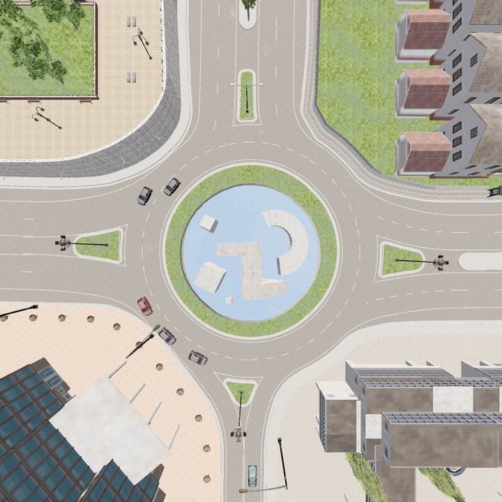
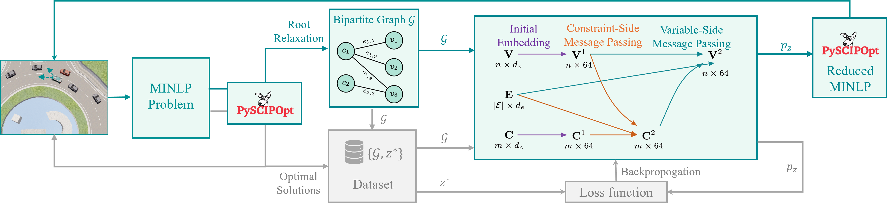
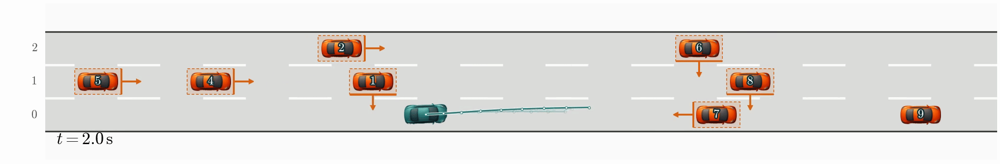
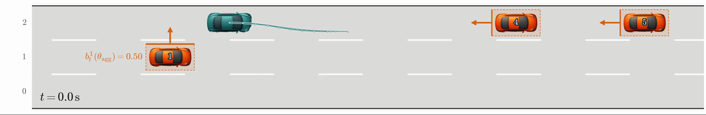
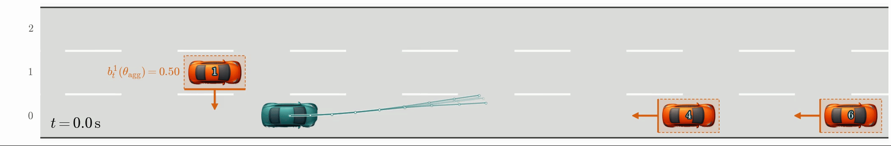
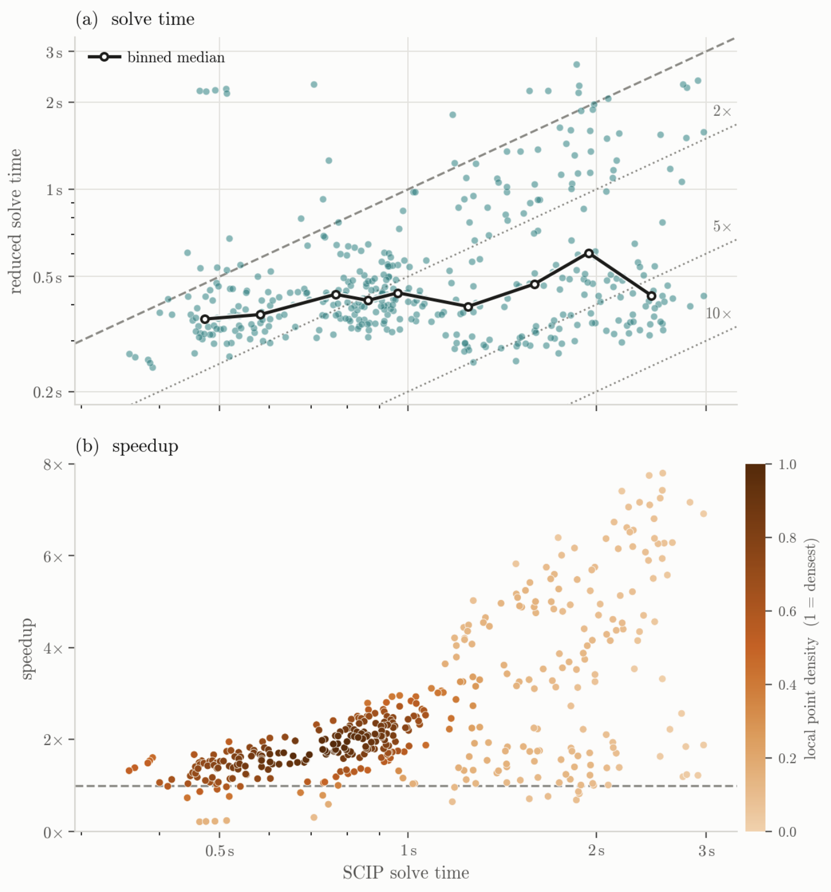

Cautious opponent

Aggressive opponent
We present a mixed-integer dual model predictive control framework for interaction-aware autonomous driving in multi-lane and multi-agent environments. To reduce the computational cost of the resulting mixed-integer optimization problem, we introduce a graph-neural-network-guided solver that predicts high-confidence discrete decisions and reduces the subsequent branch-and-bound search.

Overview of the proposed learning-enhanced mixed-integer dual MPC solver.
The ego vehicle aims to maintain a reference speed while interacting with surrounding vehicles whose responses are initially uncertain. The dual-control formulation enables the ego to actively probe these responses through its motion, accelerating belief convergence and reducing behavioral uncertainty. Meanwhile, the mixed-integer formulation provides explicit interaction decisions, making the resulting planning behavior directly interpretable.


Highway interaction II

Highway interaction III
Closed-loop evaluation in a double-lane roundabout environment. The two cases illustrate the ego vehicle's interaction with opponents exhibiting different latent behaviors.

Cautious opponent
Aggressive opponent
GNN-guided variable fixing substantially reduces the computational cost of the mixed-integer optimization while preserving solution quality. The results below summarize 411 test instances collected from 13 highway trials.

As the full MINLP becomes harder to solve, the reduced solve time remains concentrated around 0.3–0.65 s, resulting in larger speedups on computationally demanding instances. Across the test set, the maximum objective degradation is only 0.0080%, indicating that the acceleration is achieved with negligible loss in solution quality.
Code and additional materials will be released upon publication.